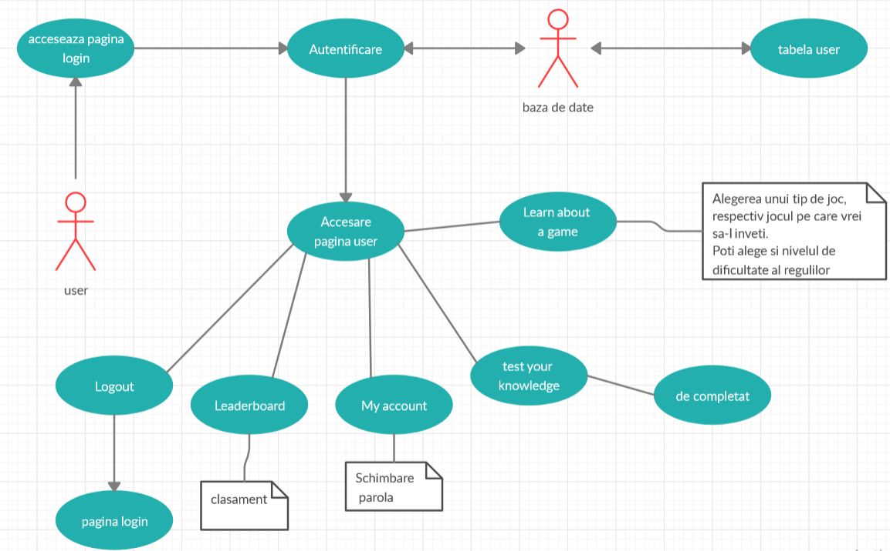

GaL - Report
Github authors
Project description
This application aims to provide support for learning the main features / rules of a game, depending on the category of the game. It also monitors everyone's progress in their learning process, depending on 3 levels of difficulty.
Architecture
Admin architecture

User architecture
-user will choose the category of the game (cards etc.), then the specific game. After
choosing the level of difficulty (easy, medium, hard), the database will retrieve the questions of the game and
difficulty (questions table).
-Next to each question there is a "Mark as read" tick that adds points in the learn table for that user in that
game.
-Administrator can see all users, change users' ppassword (via AJAX)
-Administrator can view a top of the users per game category (via AJAX), and view which game each user is
learning about
Data storage
We used a MySQL Database in order to persist the users, learning progress, questions and testing progress. Also, a table stoores the admins (email, password, and JWT for auth).
Admin authentication
We use JSON Web Tokens - JWT (i.e. a unique key) to authenticate the admin. The admin will have an email (with domain @admin) and a password to log in. Upon login, a JWT of the form xxxx.yyyy.zzzz (header.payload.secret) is created. From now on, every request he makes will contain this JWT that will authorize him access to the required resources. Based on this JWT the admin will be logged in for 2 hours. After 2 hours, the secret will be deleted (i.e. JWT will be deleted from the server and the one created at login will no longer be valid), and the admin will have to log in again. Admins are stored in the database as email and password. Upon login, the JWT specific to the current session in which the administrator is active will be stored in the database.
Ajax
For the admin, the process of viewing the top of the users per category is done asyncronously (e.g. after the page has loaded), so he does not have to wait for the top to load and view a blank page in the meantime.
Technologies used
Frontend: HTML5, CSS3, Javascript.
Backend: PHP, Javascript.
APACHE server (XAMPP) which runs the PHP files.
Data storage: MySQL.
Bibliography
https://devdrive.io
https://www.php.net/docs.php
https://www.w3schools.com/
https://stackoverflow.com/
https://css-tricks.com/